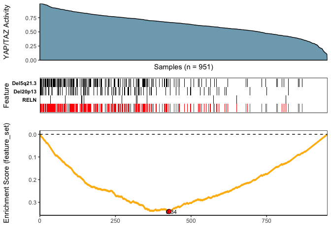

Candidate Drivers Analysis: Multi-Omic Search for Candidate Drivers of Functional Signatures
CaDrA is an R package that supports a heuristic search framework aimed at identifying candidate drivers of a molecular phenotype of interest.
The main function takes two inputs:
A binary multi-omics dataset represented as a SummarizedExperiment class object (where the rows are 1/0 vectors indicating the presence/absence of ‘omics’ features such as somatic mutations, copy number alterations, epigenetic marks, etc., and the columns represent the samples)
A molecular phenotype represented as a vector of continuous scores (sample-specific scores representing a phenotypic readout of interest, such as protein expression, pathway activity, etc.).
Based on this input, CaDrA implements a forward/backward search algorithm to find the set of features that together is maximally associated with the observed input scores, based on one of several scoring functions (Kolmogorov-Smirnov, Conditional Mutual Information, Wilcoxon, custom-defined scoring function), making it useful to find complementary omics features likely driving the input molecular phenotype.
For more information, please see the associated manuscript Kartha et al. (2019)
library(devtools)
devtools::install_github("montilab/CaDrA")
## Read in BRCA GISTIC+Mutation object
data(BRCA_GISTIC_MUT_SIG)
eset_mut_scna <- BRCA_GISTIC_MUT_SIG
## Read in input score
data(TAZYAP_BRCA_ACTIVITY)
input_score <- TAZYAP_BRCA_ACTIVITY
## Samples to keep based on the overlap between the two inputs
overlap <- intersect(names(input_score), colnames(eset_mut_scna))
eset_mut_scna <- eset_mut_scna[,overlap]
input_score <- input_score[overlap]
## Binarize FS to only have 0's and 1's
assay(eset_mut_scna)[assay(eset_mut_scna) > 1] <- 1.0
## Pre-filter FS based on occurrence frequency
eset_mut_scna_flt <- CaDrA::prefilter_data(
FS = eset_mut_scna,
max_cutoff = 0.6, # max event frequency (60%)
min_cutoff = 0.03 # min event frequency (3%)
) Here, we repeat the candidate search starting from each of the top ‘N’ features and report the combined results as a heatmap (to summarize the number of times each feature is selected across repeated runs).
IMPORTANT NOTE: The legacy function topn_eval() is equivalent to the recommended candidate_search() function
topn_res <- CaDrA::candidate_search(
FS = eset_mut_scna_flt,
input_score = input_score,
method = "ks_pval", # Use Kolmogorow-Smirnow scoring function
weight = NULL, # If weights is provided, perform a weighted-KS test
alternative = "less", # Use one-sided hypothesis testing
search_method = "both", # Apply both forward and backward search
top_N = 7, # Evaluate top 7 starting points for each search
max_size = 7, # Maximum size a meta-feature matrix can extend to
do_plot = FALSE, # Plot after finding the best features
best_score_only = FALSE # Return meta-feature set, observed input scores and calculated best score
)
## Fetch the meta-feature set corresponding to its best scores over top N features searches
topn_best_meta <- CaDrA::topn_best(topn_res)
# Visualize the best results with the meta-feature plot
CaDrA::meta_plot(topn_best_list = topn_best_meta, input_score_label = "YAP/TAZ Activity")
# Evaluate results across top N features you started from
CaDrA::topn_plot(topn_res) sessionInfo()
R version 4.2.2 (2022-10-31)
Platform: x86_64-apple-darwin17.0 (64-bit)
Running under: macOS Big Sur ... 10.16
Matrix products: default
BLAS: /Library/Frameworks/R.framework/Versions/4.2/Resources/lib/libRblas.0.dylib
LAPACK: /Library/Frameworks/R.framework/Versions/4.2/Resources/lib/libRlapack.dylib
locale:
[1] en_US.UTF-8/en_US.UTF-8/en_US.UTF-8/C/en_US.UTF-8/en_US.UTF-8
attached base packages:
[1] stats4 stats graphics grDevices utils datasets methods
[8] base
other attached packages:
[1] CaDrA_0.99.2 SummarizedExperiment_1.28.0
[3] Biobase_2.58.0 GenomicRanges_1.50.2
[5] GenomeInfoDb_1.34.4 IRanges_2.32.0
[7] S4Vectors_0.36.1 BiocGenerics_0.44.0
[9] MatrixGenerics_1.10.0 matrixStats_0.63.0
loaded via a namespace (and not attached):
[1] Rcpp_1.0.9 lattice_0.20-45 gtools_3.9.4
[4] assertthat_0.2.1 digest_0.6.31 foreach_1.5.2
[7] utf8_1.2.2 R6_2.5.1 plyr_1.8.8
[10] evaluate_0.19 highr_0.9 ggplot2_3.4.0
[13] pillar_1.8.1 gplots_3.1.3 zlibbioc_1.44.0
[16] rlang_1.0.6 misc3d_0.9-1 rstudioapi_0.14
[19] R.utils_2.12.2 R.oo_1.25.0 Matrix_1.5-3
[22] rmarkdown_2.19 labeling_0.4.2 stringr_1.5.0
[25] RCurl_1.98-1.9 munsell_0.5.0 DelayedArray_0.24.0
[28] compiler_4.2.2 xfun_0.35 pkgconfig_2.0.3
[31] tcltk_4.2.2 htmltools_0.5.4 tidyselect_1.2.0
[34] tibble_3.1.8 GenomeInfoDbData_1.2.9 ppcor_1.1
[37] codetools_0.2-18 fansi_1.0.3 withr_2.5.0
[40] dplyr_1.0.10 MASS_7.3-58.1 bitops_1.0-7
[43] R.methodsS3_1.8.2 grid_4.2.2 gtable_0.3.1
[46] lifecycle_1.0.3 DBI_1.1.3 magrittr_2.0.3
[49] scales_1.2.1 KernSmooth_2.23-20 cli_3.4.1
[52] stringi_1.7.8 farver_2.1.1 XVector_0.38.0
[55] reshape2_1.4.4 doParallel_1.0.17 generics_0.1.3
[58] vctrs_0.5.1 iterators_1.0.14 tools_4.2.2
[61] R.cache_0.16.0 glue_1.6.2 parallel_4.2.2
[64] fastmap_1.1.0 yaml_2.3.6 colorspace_2.0-3
[67] caTools_1.18.2 knitr_1.41